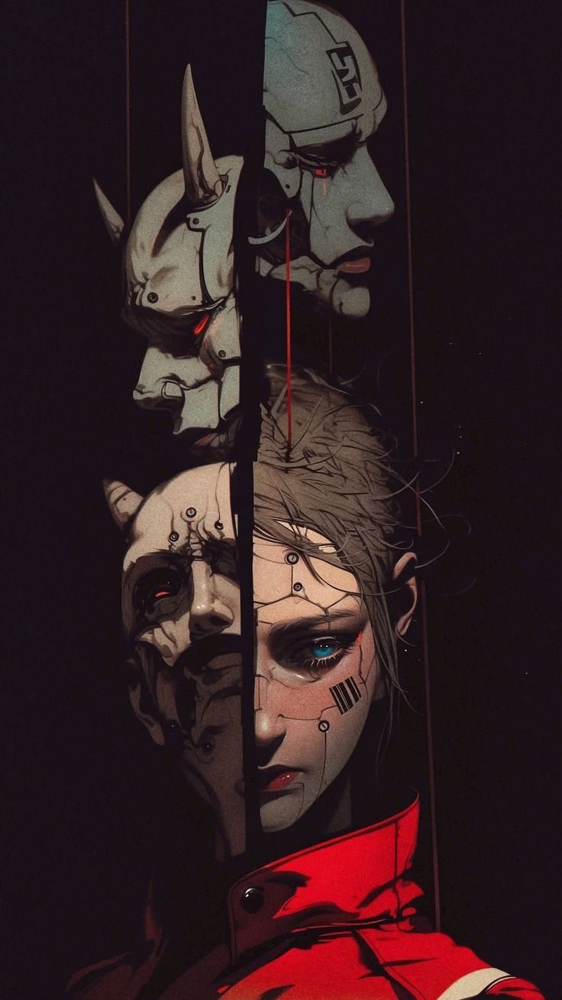

Status: Arquivado
O grupo despertou nas profundezas de um bunker cujos sistemas resistiram ao tempo. Entre chiados de rádio e luzes de emergência, a primeira diretriz foi estabelecida: sobreviver ao mundo que esqueceram. Este registro contém detalhes técnicos, estratégias e percepções coletadas no momento da ativação, incluindo falhas de equipamento e respostas improvisadas. Os sensores indicam presença de sinais anômalos nas áreas externas do bunker, sugerindo movimentação de unidades desconhecidas.

Status: Arquivado
A extração transformou-se em um campo de batalha contra executores da Yakuza. O neon das ruas refletia no sangue e no óleo enquanto os herdeiros do caos testavam seus novos limites. Este log contém transcrições, fotografias de campo e relatos de sobreviventes. Todas as medidas táticas devem ser revisadas antes da próxima incursão.
Novos dados de campo serão sincronizados após a próxima incursão no Setor de Ferro.